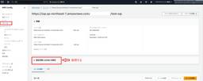

サーバーワークスエンジニアブログ
https://blog.serverworks.co.jp/
クラウド専業インテグレーター・サーバーワークスの中の人があらゆる技術についてお届けします。
フィード

Amazon S3 Vectors を試してみた — ベクトル検索から Bedrock Knowledge Base 統合まで
サーバーワークスエンジニアブログ
2026年3月7日追記: 本記事の初版公開時、S3 Vectors がプレビュー段階であることを前提に記載していましたが、2025年12月2日に一般提供（GA）が開始されていました。GA に伴うリージョン拡大（東京リージョン対応）、制限値の変更（インデックスあたり最大20億ベクトル、topK 上限100件など）を反映して記事を修正しました。誤った情報を掲載してしまい申し訳ございません。 はじめに 2025年7月にプレビューとして発表され、2025年12月に一般提供（GA）が開始された Amazon S3 Vectors を実際に触ってみました。S3 Vectors は、ベクトルデータの保存・ク…
1日前

Amazon Cognito でクライアントシークレットのローテーションとカスタムシークレットが使えるようになりました
サーバーワークスエンジニアブログ
はじめに 2026 年 2 月 26 日に Amazon Cognito のアップデートがありました。 Amazon Cognito enhances client secret management with secret rotation and custom secrets ユーザープールのアプリクライアントに対して、以下の機能が追加されています。 クライアントシークレットのオンデマンドローテーション カスタムクライアントシークレットの指定（自分で値を決められる） アプリクライアントあたり最大 2 つのシークレットを同時に保持 これまではシークレットの変更にはアプリクライアントの再作成が…
1日前

IAM ロールの作成がサービスコンソール内で完結するようになったので Lambda で試してみた（現状はバージニア北部リージョンのみ）
サーバーワークスエンジニアブログ
はじめに 従来のロール作成フロー 新しいロール作成フロー ロール名の入力 ポリシーの選択 ロールの作成 試してみた感想 従来との比較 まとめ 余談 こんにちは。アプリケーションサービス部エデュケーショナルサービス課の山本です。 部の名前は「アプリ」ですが、インフラエンジニア（？）として中途採用者の教育などを行っています。 最近は断捨離にハマった結果、家からエアロバイク以外の家具がなくなりました。 はじめに 2026年3月4日、AWS が IAM ロールの作成・設定をサービスワークフロー内で簡素化するアップデートを発表しました。 これまで Lambda 関数を作成する際に新しい IAM ロールを…
1日前

Google Workspace CLIって何ができる？活用方法は？
サーバーワークスエンジニアブログ
「Googleカレンダーを開いて、予定を作って、次にGmailを開いて、メールを確認して、次にスプレッドシートを開いて...」 毎日こんなふうに、ブラウザのタブを行き来していませんか？ 2026年3月に公開された Google Workspace CLI（gws） を使えば、こうした操作がターミナル（黒い画面）からたった1行のコマンドで済むようになります。 さらにAIと組み合わせれば、日本語で「明日のミーティングを設定して」と話しかけるだけ。 この記事では、その全体像と驚きの活用シーンをサクッと紹介します。 Google Workspace CLI って何？ Google Workspace …
1日前
エクセル設計書とソースコードを差分比較する仕組みを考えてみた
サーバーワークスエンジニアブログ
目次 はじめに 概要 Excel設計書のtxt変換 設計書とソースコードの差分レビュー 実行結果 活用例 まとめ はじめに こんにちは、佐々木です。 皆さんはプログラムの設計書をどの形式で作成していますか？ Markdown形式が増えてきたものの、まだまだExcel設計書を使うことも多いのではないでしょうか。 私も先日、Excelで設計書を書いていたら、こんなことがありました。 Excelで設計書を作成 コーディングを実施 コーディング中の仕様変更がExcel設計書に反映されず、ソースコードとの間に差分が発生 これは開発プロジェクトあるあるではないでしょうか。 最後に総チェックする方法もありま…
1日前
SQS FIFO×Lambda連携を“挙動ベース”で理解する：API方式とESM方式をいろいろ検証
サーバーワークスエンジニアブログ
概要 本ブログはSQSのFIFOキューおよびLambdaの連携についてまとめたものです。 各検証のイメージ図を作成しているので、気になるところから見ていただければと思います。 【本記事でわかること】 SQSのFIFOキューについて SQSのFIFOキューとLambdaの連携について 様々な挙動の検証結果 はじめに こんにちは！クロスインダストリー第2本部 統合運用サービス課の圡井です。 この時期に満開の桜が咲いていてびっくりしました。河津桜（カワヅザクラ）というみたいです。 最近、SQSのFIFOキューとLambdaを連携させる機会があったため、実際にどんな動きになるのかを検証してみたブログで…
1日前

Keycloakを学ぶ④パスキー編
サーバーワークスエンジニアブログ
WebAuthnの設定 認証フローの作成とバインド ユーザーによるパスキー登録 動作確認 まとめ こんにちは、アプリケーションサービス本部の上田です。 ここのところ魚焼きグリルを使うのがマイブームで干物や鶏肉を買ってきてはグリルにかける毎日を送っています。 意外と手入れが楽で放っておくと料理ができるのでなかなか便利です。 前回までで一通りのKeycloak設定方法は解説しましたが、今回は指紋認証やPIN、いわゆる「パスキー（Passkeys）」認証をKeycloakに取り入れてみます。これが導入できると、一気にモダンな認証基盤という感じがしますね。 早速設定していきますが、注意点として今回はW…
1日前
GitHub で実現する Dependabot × SBOM による依存関係の脆弱性管理を考えて試してみた 2
2
サーバーワークスエンジニアブログ
GitHubのDependabotとSBOM機能を活用して、依存関係管理とソフトウェア構成の可視化を実現する方法を詳しく解説します。
2日前

GitHub SpecKitを使ってみた！ ~AWSサーバーレスAPIを「自然言語」と「CLI」だけで構築する~ PART2 29
サーバーワークスエンジニアブログ
はじめに 1.仕様の追加定義(/speckit.specify) 2. 追加機能の実装計画の作成(/speckit.plan) 3. いざ実装とデプロイ(/speckit.implement) 4. 動作検証: 実際に叩いてみる まとめ はじめに 前回（Part 1）では、GitHub SpecKitを使用して、ゼロからAWSサーバーレス構成（Lambda + DynamoDB）のAPIを立ち上げ、「作成(Create)」と「取得(Read)」機能を実装しました。 今回はその続きとして、残る「更新(Update)」と「削除(Delete)」機能を追加し、完全なCRUD APIとして完成させてい…
2日前

Amazon Bedrock AgentCore Policy が GA したので Cedar による MCP ツールのアクセス制御を検証してみた
サーバーワークスエンジニアブログ
はじめに Cedar ポリシーの基本 アクション名のフォーマット パターン1: IAM 認証（SigV4）での検証 構成 検証1: すべてのアクションを許可するポリシー 検証2: 特定のアクションだけ許可するポリシー 検証3: OAuth クレームによる条件付きポリシー IAM 認証パターンのまとめ 追記: GA 後の再検証で発生した問題 パターン2: OAuth 認証（Cognito）での検証 構成 ゲートウェイのサービスロールにポリシーエンジン関連の権限が必要 検証4: client_id による条件付きポリシー 正しい client_id での検証（許可） 間違った client_id …
3日前

【マルチアカウント設計】AWS Organizations / AWS Control Tower 導入前に整理すべきポイント
サーバーワークスエンジニアブログ
本記事では、AWS のマルチアカウント設計を考える必要がある方向けの記事になります。 こんにちは！クロスインダストリー第1本部 の日高です。 今回は、マルチアカウント設計を進めるうえでの「設計観点」について、まとめてみたいと思います。 あくまで本記事で紹介するのは“自分なりの分解の仕方・考え方”の共有にはなりますが、設計観点の整理に悩んでいる方のヒントになれば幸いです。 はじめに マルチアカウントが推奨される背景 マルチアカウント設計の整理観点 全体像 役割を決める AWS アカウントの分類 個別アカウントの設計 よくある分割パターン 分割を考える際の整理軸 推奨 共通アカウントの設計 共通ア…
3日前
AIが出題し、AIが採点する"記述式AWSクイズ"を作ってみた
サーバーワークスエンジニアブログ
好きなクイズ番組は「クイズ世界はSHOW by ショーバイ!!」の畑野です。 本記事では、LLM-as-a-Judgeの概念を採用し、AWS公式情報のみを根拠とした記述式AWSクイズアプリを構築した取り組みを紹介します。 生成AIを「問題作成者」だけでなく「評価者」としても活用し、評価基準（rubric：採点観点のチェックリスト）を明示した上でスコアリングを行う構成としました。 またハルシネーションを抑制するため、AWS Knowledge MCP Serverを用いたRAG構成を採用し、推論はAmazon Bedrock（Converse API）経由で実行しています。 このクイズアプリは社…
4日前

EC2インスタンス上でネスト仮想化が可能になりました
サーバーワークスエンジニアブログ
はじめに 必要な設定 注意 想定されるユースケース 1. 開発環境の完全なポータビリティ 2. サンドボックス・検証環境のクリーン化 3. 高負荷作業のオフロード まとめ はじめに こんにちは！サーバーワークスの清水です。 2026年2月に、Amazon EC2インスタンス上でネスト仮想化が可能となりました。 aws.amazon.com docs.aws.amazon.com これまでEC2上でハイパーバイザーを動かしたい場合（例えばWindows上でWSL2やDocker Desktopを利用するなど）、選択肢はほぼ「ベアメタルインスタンス（.metal）」に限られていました。 ベアメタル…
4日前

Amazon Auroraのグローバルデータベース化でハマった話
サーバーワークスエンジニアブログ
はじめに 前提条件 何が起きたのか？ グローバルデータベースの有効化 グローバルデータベースの要件 インスタンスのリソース容量が大きければ問題がないのか？ 少し癖のある挙動 解決方法 結論 (補足)インスタンスタイプ以外の重要な要件 まとめ はじめに クロスインダストリー第1本部 CC2課の京極です。 皆さん、Amazon Aurora のGlobal Databaseは使っていますか？ これを使えば、リージョンをまたいでAmazon Auroraを展開することができます。 先日、この機能を有効化しようとして失敗してしまったので、注意喚起も兼ねてどういう失敗だったのかをご紹介したいと思います！…
4日前

Redshift のデータを S3 に出力後 AWS DataSync を利用して Amazon Quick へ取り込む構成
サーバーワークスエンジニアブログ
セキュリティサービス部 佐竹です。Amazon Redshift に保存されているデータを、Amazon Quick Suite や Quick Sight に取り込んで利用したいシーンにおいて、AWS DataSync を利用する方法を今回検証してみました。
4日前

仕様駆動開発で「どれが正しい仕様？」がわからなくなったので、管理方針を決めた話
サーバーワークスエンジニアブログ
仕様駆動開発で「どれが正しい仕様？」がわからなくなったので、管理方針を決めた話 こんにちは、サーバーワークスで生成AIの活用推進を担当している針生です。 AI-DLC（AI-Driven Development Life Cycle）で開発を進めていると、サイクルごとに要件書・設計書・コードが生成されます。しかし、サイクルを重ねるにつれて「結局どれが正しい仕様なのか？」という疑問が出てきました。 本記事では、Spec-Driven Development（SDD）の知見を取り入れつつ、AI-DLCプロジェクトにおけるドキュメント管理方針を策定した過程を共有します。 要約 AI-DLCで開発を進…
6日前

FSx for NetApp ONTAPのS3アクセスポイント機能を試してみた
サーバーワークスエンジニアブログ
はじめに やること 検証環境 事前準備 検証用ダミーファイルをFSx ONTAP上に格納 ec2-access-logs.csv ファイル名: application-logs.csv Athena クエリ保管用バケットの作成 S3アクセスポイントを作成してみる S3 アクセスポイントの作成 S3 アクセスポイント経由でAthenaクエリを実行してみる データベースを作成 テーブルを作成 分析クエリの実行 クエリ 1: 基本的なデータ確認 クエリ 2: リージョン別のアクション集計 クエリ 3: 環境別のエラー率 所感 まとめ はじめに こんにちは！サーバーワークスの阿部です。 少し前ですが、…
6日前

【2026/2/22〜28】Claude Code更新情報 Remote Control登場・Auto-Memory追加 2
サーバーワークスエンジニアブログ
【2026/2/22〜28】Claude Code更新情報 Remote Control登場・Auto-Memory追加 はじめに サーバーワークスの池田です。 今週（2/22〜2/28）の Claude Code は v2.1.51 から v2.1.63 まで10バージョンがリリースされました。 最大の目玉はローカルセッションをスマートフォンやブラウザから操作できる Remote Control の登場です。 さらに、Claude が作業中のコンテキストを自動的にメモリへ保存する Auto-Memory や、コード品質を自動改善する /simplify、大規模変更を並列実行する /batch…
6日前
GitHub Agentic Workflows を試してみた
サーバーワークスエンジニアブログ
はじめに 利用にあたっての前提 Agentic Workflows 拡張機能のインストール サンプルワークフローの作成 まとめ はじめに サーバーワークスの宮本です。去る 2026-02-16、GitHub Agentic Workflows がテクニカルプレビューとなりました。 github.blog GitHub Agentic Workflows （以下、 Agentic Workflows）とは、簡単にいうと Markdown 形式で記述したワークフローをAIエージェントが実行する自動化機能です。 本記事では、公式ドキュメントの Quick Start に沿って Agentic Wor…
7日前

AWS Config Custom Policy（Guard）でタグ検知する際の注意点
サーバーワークスエンジニアブログ
はじめに 結論 具体的な設定方法 対象リソースの JSON を確認する パターン1 （ECR Repository） パターン2（Cognito IdentityPool） パターン3（EventBridge） おまけ：複数リソース・複数タグを検知する場合 まとめ はじめに みなさんは AWS リソースのタグ運用をされていますでしょうか。 タグはリソース管理やコスト分析などに活用でき、適切に運用することで環境の可視性が大きく向上します。 しかし、タグ運用を定着させるためには「タグの付け忘れ」を防止する仕組みが必要です。 AWS Config には、指定したタグが付与されているかをチェックできる…
8日前

draw.io MCP Serverを使って構成図からIaCを出力するCode as Diagramをやってみよう
サーバーワークスエンジニアブログ
さとうです。 先日、draw.ioのMCP Serverが公開されましたね。 blog.serverworks.co.jp このMCP Serverを使うと構成図からIaCが楽に起こせそうだったので記事にしてみます。 Diagram as CodeならぬCode as Diagram*1をやってみました。 Diagram as Codeではなく、Code as Diagramがしたい コンセプト 検証してみる 検証環境 まずは初版からIaCを作成する IaCをデプロイしてみる 構成図を変更してIaCに反映してみる わかったこと 400KBの制限がある 画像の埋め込みは解析できない 構成図で表現…
9日前
Amazon Aurora DSQL 2026年2月のアップデートまとめ — IDENTITY列・SEQUENCEとNUMERIC型インデックスを試してみる
サーバーワークスエンジニアブログ
はじめに 2026年2月のアップデート一覧 この記事で学べること 前提知識・条件 1. IDENTITY列とSEQUENCEオブジェクトのサポート やってみた クラスターの作成 統合クエリエディタで接続 IDENTITY列を使ったテーブル作成 SEQUENCEオブジェクトの作成 UUIDとの使い分け 2. NUMERIC型のインデックスサポート やってみた まとめ はじめに こんにちは！ アプリケーションサービス本部ディベロップメントサービス１課の森山です。 2026年2月、Amazon Aurora DSQL に複数のアップデートがありました。 今回はその中から特に気になった2つをピックアッ…
9日前
MFAデバイス登録時に"MFA device already exists"出た際の落とし穴
サーバーワークスエンジニアブログ
こんにちは。最近京都へ旅行に行った荒井です。 平日に行ったおかげもあり、かなり人が少ない中ゆったり観光できてよかったです。 私事ですが、最近iphoneを13miniから17に機種変更しました。 それに伴いMFAデバイスを登録し直そうとした際に本記事のタイトルにもなっているエラーが発生したので、備忘録として残しておこうと思います。 結論 経緯 ドキュメントを探してみる 終わりに 結論 先に結論を書いておくと、登録しようとしたMFAデバイス名がアカウント内の他のユーザーと被っていたことが原因でした。 これから登録する方は、一般的すぎる名前は避けて、自分の名前を含めるなどユニークな名前にしておくこ…
9日前
CrowdStrike Falcon Device Control USBデバイスのリスクを管理し、セキュリティを強化
サーバーワークスエンジニアブログ
CrowdStrike Falconプラットフォームの一部であるDevice Control(デバイス制御)機能は、エンドポイントに接続されるUSBデバイスの使用を詳細に可視化し、制御することで、組織のデータ保護とマルウェア感染リスクの低減を支援するモジュールです。 特に、持ち運びが容易で便利なUSBデバイスは、企業のデータ漏洩やマルウェア侵入の主要なリスク要因の一つとなり得るため、その利用を適切に管理することが現代のセキュリティ対策において非常に重要です。 CrowdStrike関連の記事一覧はこちら Device Controlの主な機能 Device Controlは、追加のエージェント…
9日前
CloudWatch Logs の削除保護機能が新たに提供されました
サーバーワークスエンジニアブログ
こんにちは、アプリケーションサービス部の遠藤です。 AWS CloudWatch Logs を運用する上で、最も恐ろしいことの一つが「重要なロググループの誤削除」です。 これまでは、IAM ポリシーによる権限制限などで対策するしかありませんでしたが、ついに標準機能として「削除保護（Deletion Protection）」が実装されました。本記事では、この機能の概要、設定方法、そして運用上のメリットを解説します。 1. ロググループの削除保護とは？ 削除保護とは、その名の通りロググループが誤って、あるいは意図せず削除されるのを防ぐ機能です。 この機能が「有効」になっているロググループは、AWS…
9日前
AWS Fleet Manager接続時、MFAを必須とするIAM権限とタグベースアクセス制御の実装
サーバーワークスエンジニアブログ
こんにちは、アプリケーションサービス部の遠藤です。 今回はEC2へのFleet Manager接続のみを目的としたユーザーに対して、多要素認証を必須とする権限設計・実装した際に少々苦戦したため、備忘録として本記事を執筆しました。 AWS Systems Manager（SSM）の Fleet Manager を使用して EC2 インスタンスに接続する際、アクセス拒否エラー（AccessDenied）に直面することがあります。 特に「IAM ユーザーに MFA（多要素認証）を必須としている」かつ「タグベースのアクセス制御を導入している」環境では、権限設定が複雑になりがちです。 これらのエラーを解…
10日前
New RelicにMFA機能が追加されたので早速試してみた
サーバーワークスエンジニアブログ
New Relicに追加されたMFA（多要素認証）機能を実際に設定してみた記事です。認証ドメインの仕組みやMFAが使える条件、設定手順、ログインフローの変化をわかりやすく解説します。
10日前
エンジニアの"消耗"を終わらせる——New Relic Advance 2026 の全アップデートを整理する
サーバーワークスエンジニアブログ
2026年2月に開催されたNew Relic Advance 2026で発表された全アップデートをSREエンジニア向けにわかりやすく解説。SRE Agent・iRCA・Intelligent Workloads・Smart Alerts・MCP対応など13機能の概要とメリットを一覧表つきでまとめています。
10日前
Amazon Auroraをバックアップから復元した時にIaCとの矛盾が起きる現象への対策
サーバーワークスエンジニアブログ
こんにちは。 アプリケーションサービス部、DevOps担当の兼安です。 今回は、バックアップからの復元でIaCとの矛盾が起きた場合の対策の紹介です。 はじめに 本記事のターゲット 復元によりできたIaCとの矛盾を解消する2つの方法 バックアップからAuroraクラスターを作り直し。その後IaCとの矛盾を解消して整合性を取る 元のAuroraクラスターを削除 バックアップからAuroraクラスターを作り直し Auroraクラスターにインスタンスを追加 ドリフトの検出 変更セットでドリフト解消 変更セットの作成に失敗する場合 AWS Backupの復旧ポイントからのAuroraクラスターの復元手順…
11日前
【Cloud Automator】IAMロール更新フローが簡単になりました
サーバーワークスエンジニアブログ
概要 これまでAWSマネジメントコンソールに遷移して行っていた「IAMロールの権限更新」が、Cloud Automatorの画面内だけで完結するようになりました。 画面を行き来する手間がなくなり、よりスムーズに設定を最新状態へアップデートいただけます。 注意点 2026年2月25日（本機能リリース日）以降に、一度IAMロールの更新処理を行ったAWSアカウントが対象です。 使い方 対象AWSアカウントのIAMロールの権限列「更新してください」をクリックします。 表示された確認画面で「更新する」をクリックします。 IAMロールの権限列が「更新中」に変わります。そのまま画面を閉じずに少々お待ちくださ…
11日前